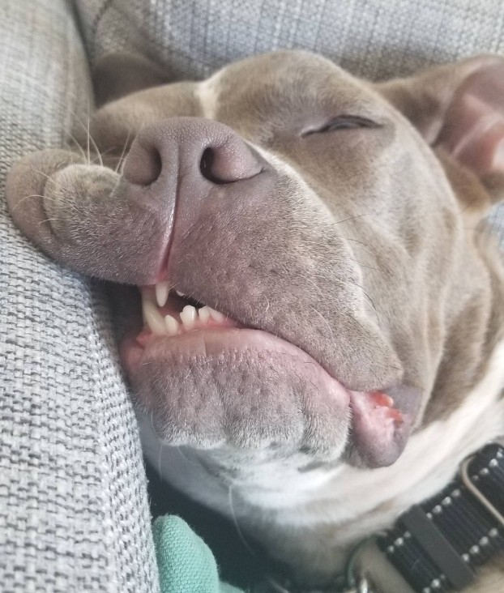

Hi there.
I'm Mia.

And this site is
all about me.
About this site
My dad and I started this site while I was training to become a therapy dog. "Therapy dogs are dogs that are used to bring comfort and joy to those who are ill or under poor conditions, such as those who have been affected by a natural disaster. Many people are able to connect with dogs and feel the love that they provide, and this has a therapeutic effect on them. Typically, they visit hospitals, schools, hospices, nursing homes and more."
Through this site, patients can keep in touch with me in-between our visits. I hope to forge closer relationships with the patients I’ll see on a regular basis. About me I was born Aug 6th, 2018. Not certain happened till I was 7 months old but at that point I was wandering the street of Silver Lake with my sister. We grabbed food from dumpster and whatever we found the street. In March we were found by volunteers from Hope For Paws who fed us, bathed us and treated us so humanely at The Veterinary Care Center where I was also vaccinated and chipped.
Till a permanent home is found I was fostered by the Pitties and Pals Rescue organization. I was waiting patiently to get adopted. After a couple of weeks, Ziv showed up and the rest is history. At this point, my life changed forever, and I have the best life a bitch can wish for! I love the daily walk routines around my Jewish neighborhood, the hikes on Franklin and Runyon Canyons, and the visits to Pan Pacific Park, where I play with my best friends Blue, a deaf Pitbull, and the most playful German Pointer - Perla. Hobbies My favorites ones are:
Through this site, patients can keep in touch with me in-between our visits. I hope to forge closer relationships with the patients I’ll see on a regular basis. About me I was born Aug 6th, 2018. Not certain happened till I was 7 months old but at that point I was wandering the street of Silver Lake with my sister. We grabbed food from dumpster and whatever we found the street. In March we were found by volunteers from Hope For Paws who fed us, bathed us and treated us so humanely at The Veterinary Care Center where I was also vaccinated and chipped.
Till a permanent home is found I was fostered by the Pitties and Pals Rescue organization. I was waiting patiently to get adopted. After a couple of weeks, Ziv showed up and the rest is history. At this point, my life changed forever, and I have the best life a bitch can wish for! I love the daily walk routines around my Jewish neighborhood, the hikes on Franklin and Runyon Canyons, and the visits to Pan Pacific Park, where I play with my best friends Blue, a deaf Pitbull, and the most playful German Pointer - Perla. Hobbies My favorites ones are:
- Chasing squirrels
- Belly rub
- Napping
- Chasing balls
- Running in circles
- Licking my dad's face